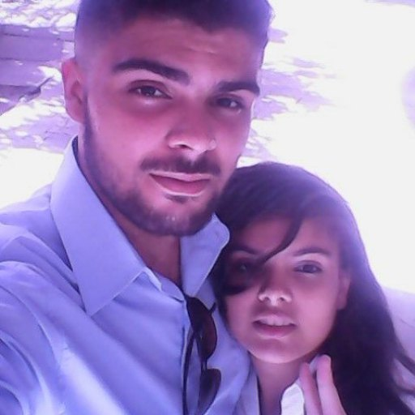
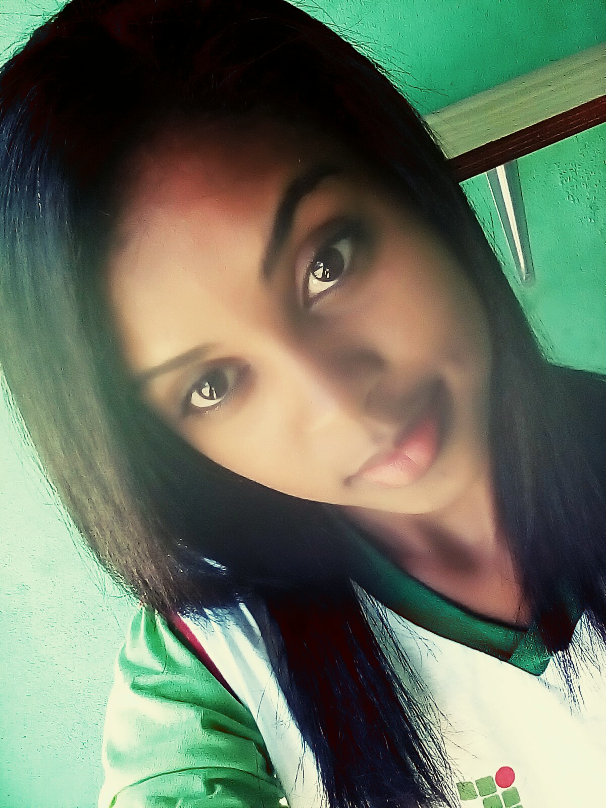

Perfil
Alessandra Revoredo
"Toda conquista começa com a decisão de tentar."
Adauto Pereira
"Como não entendo os códigos da vida
me tornei programador."
Deyvid Anderson
"Ter sucesso é falhar repetidamente,mas sem perder o entusiasmo."
Elinalda Maria
"Fazer o que você gosta é liberdade,gostar do que voce faz é felicidade."
Kaline Marculino
"Não é o mais forte que sobrevive,nem o mais inteligente,mas o que se adapta ás mudanças."
Marcela Balbino
"As grandes ideías surgem da observação dos pequenos detalhes."
Odin Miguel

"Na vida duas coisas estão certas, uma é a morte
e a segunda, é que você terá que tomar escolhas,
porque pelo fato de você não escolher, já está escolhendo."
Pollyana De Kassia

"A vida é feita de oportuninades, não as que surgem de repente, mas sim as que nós criamos."